ELENCO DE VOCES
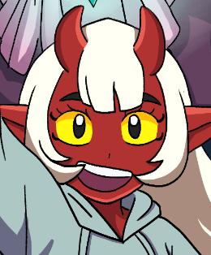
Aiko Kumiko
Es la protagonista de la serie. Una princesa oni con un gran sentido de la justicia. Su voz debe transmitir valentía pero también su inocencia de 14 años.

LINNAD_S

Takii
Takii, el adorable compañero parlanchín de Aiko, es una mezcla única de ternura y juego. Se cree el protector de la princesa y se enorgullece de su 'fuerza'.

Lindsey
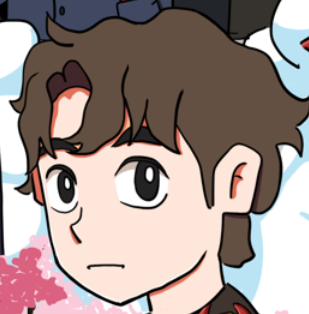
Steven
Un niño proveniente de otro mundo que cruza caminos con Aiko. Con su naturaleza bondadosa y gentil, se convierte en su primer amigo y en el guía esencial para que ella comprenda los misterios y las costumbres de la vida humana.

DiegoAVG
Masato
Antaño un ciudadano ejemplar y el pilar de su familia, Masato se convirtió en la sombra de lo que fue cuando la Alianza le dio la espalda en su momento de mayor necesidad. Consumido por la decepción y el deseo de justicia propia, ahora actúa como el antagonista principal.
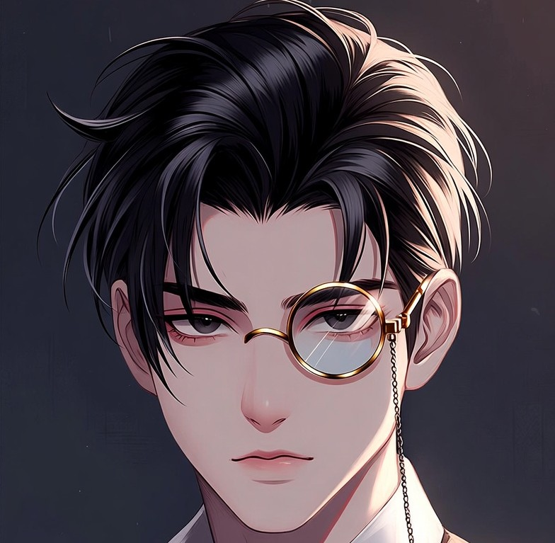
Meliastor

Kurogane
Tras quedar inválido en el campo de batalla, Kurogane descubrió la cara más fría de sus superiores: el abandono. Consumido por un resentimiento profundo hacia quienes alguna vez sirvió, ahora actúa bajo la convicción de que la Alianza solo ve a su gente como piezas prescindibles.
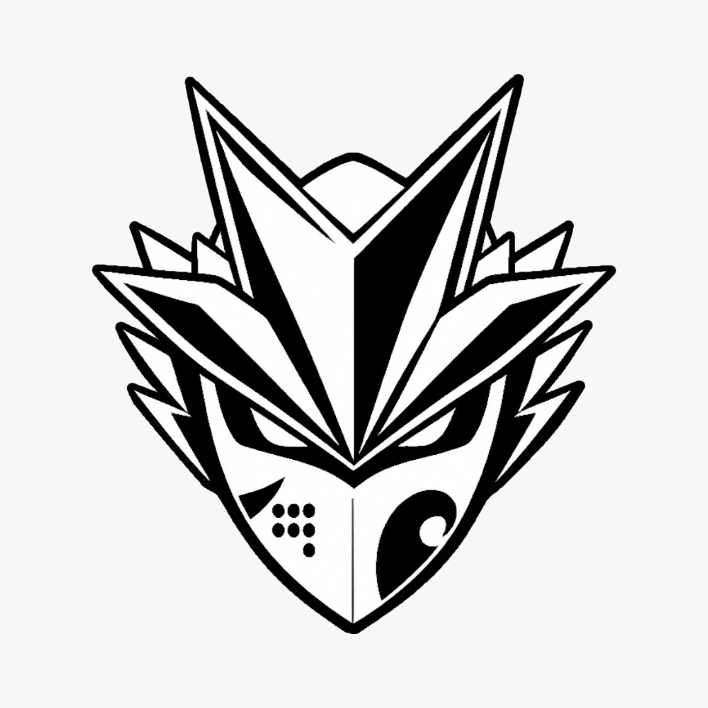
Veelkan
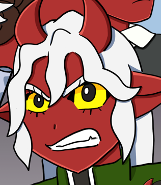
Kiyora
Guardaespaldas de élite y protectora incondicional de Aiko. Posee un sentido de la justicia inquebrantable, pero vive atormentada por el misterio de su origen; una marca tatuada en su piel es la única pista de un pasado que no logra recordar.

Cass

Jenns
A sus 17 años, el resentimiento consume su corazón tras ser abandonado por la Alianza durante la caída de su ciudad. Obligado a vivir como cazarrecompensas para sobrevivir, ahora es uno de los fugitivos más buscados por aquellos que juraron protegerlo.
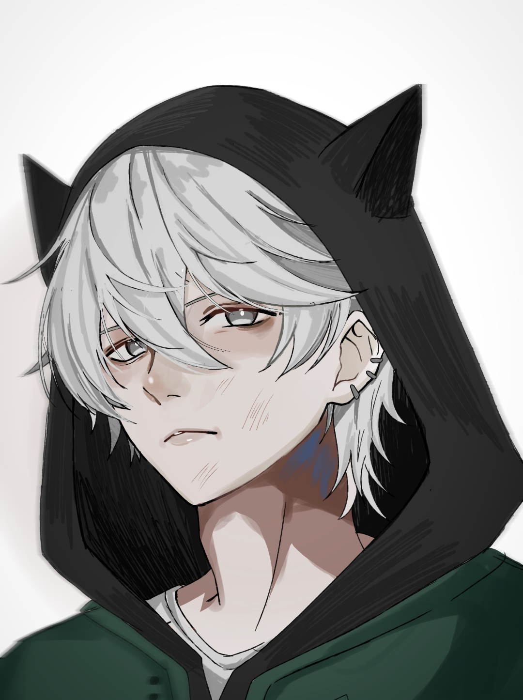
Miitaki

Jefe Routswell
El cascarrabias Jefe de Operaciones de la Alianza. Es un líder de mano firme que no teme aceptar daños colaterales con tal de cumplir sus objetivos. A pesar de su actitud severa, mantiene un vínculo cercano y protector con Aiko.
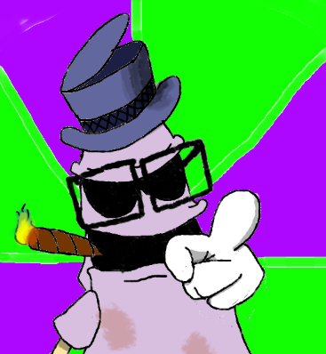
SrCongadonk

Momo
Hija del Jefe de Operaciones Routswell, Momo vive bajo la estricta y a veces asfixiante tutoría de su padre. Su relación es un campo de batalla de discusiones sobre el deber y la ética de las misiones. Valiente e intuitiva, ella sospecha que tras las órdenes de su padre se ocultan secretos que la Alianza no está lista para revelar.
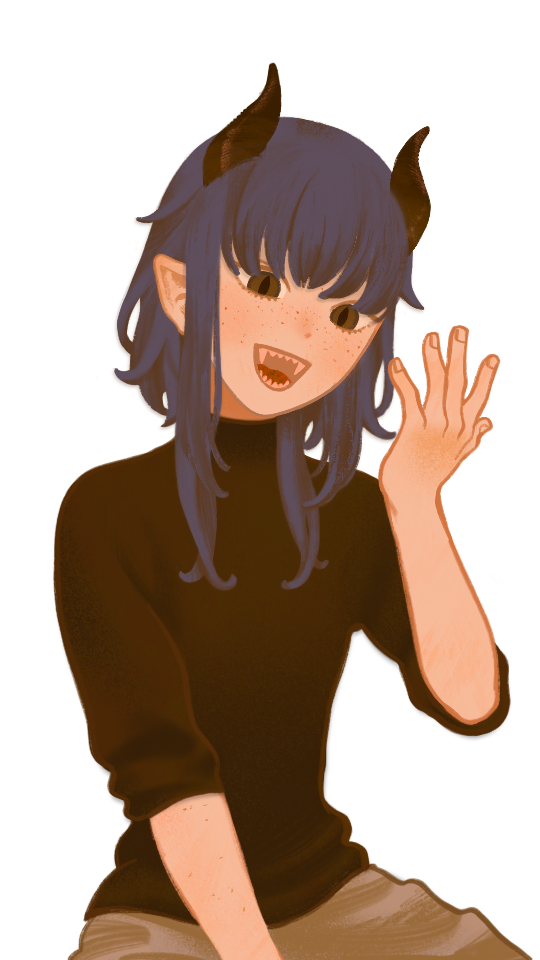
Sasha

Satoshi Sensei
La mente más brillante de la Alianza. Satoshi no es solo un maestro de combate, es un estratega que entiende que la verdadera fuerza proviene del control. Su misión principal es moldear a Aiko, enseñándole que la paciencia es tan vital como el ataque y que la disciplina es el camino hacia las técnicas avanzadas que ella está destinada a dominar.

DKAY_04
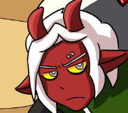
Takumi
Uno de los mayores expertos de la élite en el arte de la katana. Takumi no solo confía en su acero, sino en su excepcional 'Aura Perceptiva', una habilidad sensorial que le permite leer la energía del entorno y predecir los ataques enemigos antes de que ocurran. Es el filo y el escudo de su equipo.

Kouh
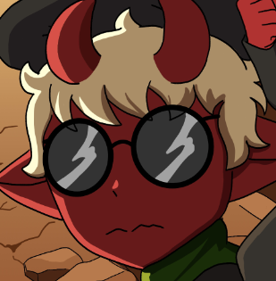
Renjiro
Aunque su naturaleza nerviosa pueda engañar, Renjiro es la mente táctica indispensable de la élite. Fiel a las órdenes y de corazón noble, su maestría con el equipo de localización de aura y su vasto conocimiento del terreno y la fauna lo convierten en el guía perfecto. Si hay una salida, Renjiro la encontrará primero.

Tiago_1591

Lider Kitsuya
Reconocida como la kitsune más hermosa y futura Gran Yokai. Como líder de su clan, combina su naturaleza coqueta y divertida con un carisma magnético que hace que cualquiera caiga rendido a sus pies ante la menor provocación.

Levet
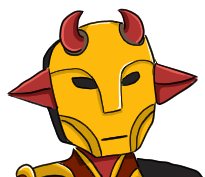
Vaelis Tyberius
Bajo la imponente armadura del soberano de la Forja, se esconde una voluntad frágil. Aunque proyecta una imagen de autoridad y temor para mantener el control, Vaelis es en realidad un hombre con el corazón de un niño asustadizo.
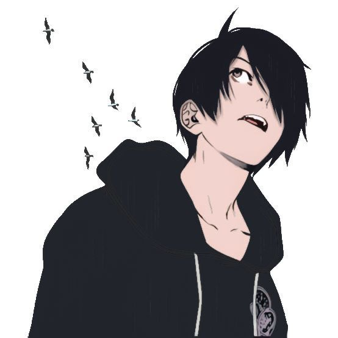
Tohru29
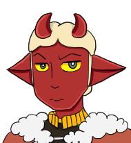
Alaric Winterguard
Un líder cuya lealtad termina donde empieza su linaje. Alaric es la definición de egocentrismo protector; es capaz de romper cualquier tratado o alianza si eso garantiza la seguridad de su familia.
Tohru29

Klaus Warbolt
Heredero de un nombre que antes hacía temblar a naciones enteras. Tras la extinción de su clan —el más peligroso del país— a manos de un gran héroe, Klaus adoptó una actitud despreocupada y relajada que oculta sus verdaderas intenciones.
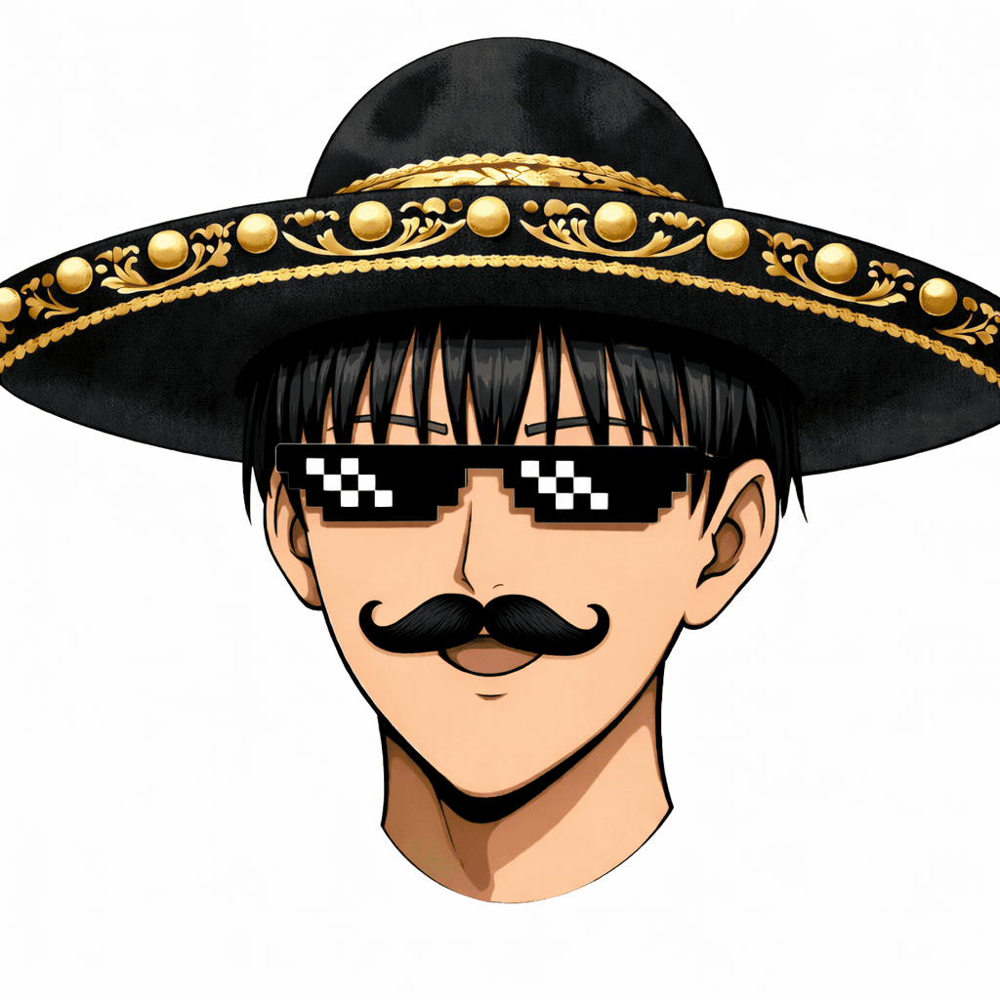
Saitama1810

Jin Yoji
El eslabón más inestable del grupo anónimo. Jin Yoji vive en un estado de nerviosismo perpetuo, siendo el recipiente de una energía oscura cósmica que acecha desde su interior. Mientras trabaja en las sombras, Jin debe concentrar cada gramo de su voluntad para evitar que esa oscuridad total consuma su cuerpo y su cordura en cada misión.
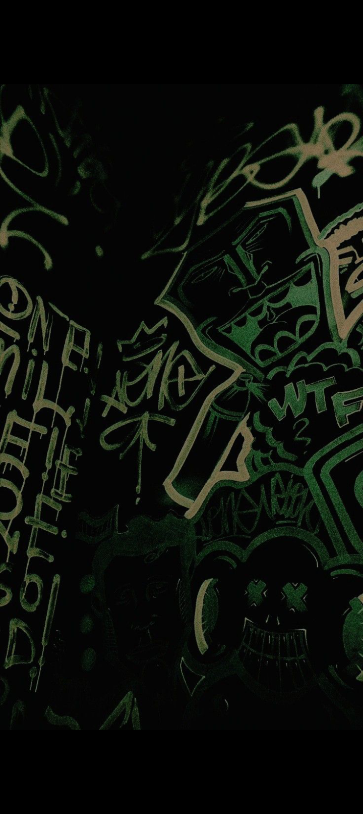
Casper

Ryota
Líder indiscutible del escuadrón rebelde, Ryota es una figura seria y de aura malévola que infunde respeto en el campo de batalla. Calculador al extremo, ejecuta con precisión quirúrgica cada plan que su padrastro le encomienda para las misiones, cuya frialdad solo se rompe por el férreo instinto de protección que mantiene sobre sus hermanos..

AetherisSinZ

Yui
La facción destructiva y letal de los gemelos. Amante de la lectura tanto como de las explosiones y el fuego, Yui nunca se separa de su hermano Yuo. Juntos, son una fuerza caótica que convierte cualquier misión en una locura inolvidable.
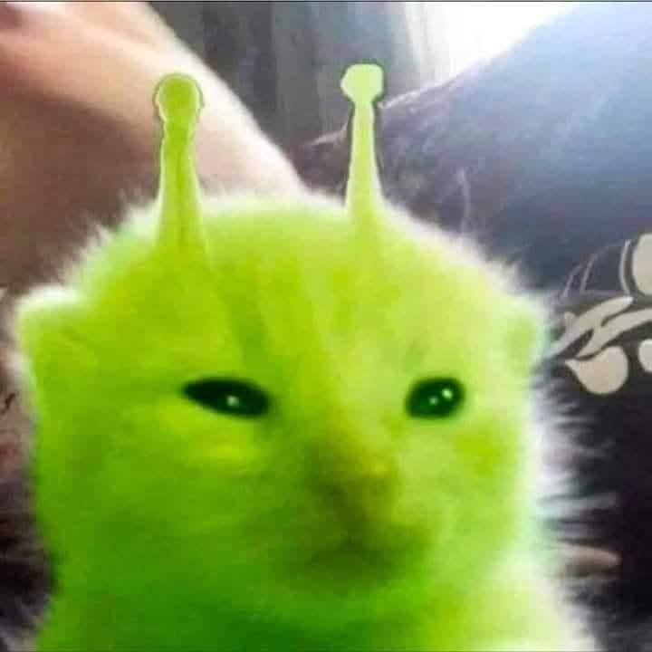
NoBody

Yuo
El prodigio intelectual de la Academia Log-Tech y hermano gemelo de Yui. Su brillantez estratégica fue moldeada bajo la tutela del excéntrico Dr. Cog-Zog, logrando un dominio tecnológico que solo es superado por su capacidad para meterse en líos junto a su hermana.
nueva vacante

General Lashiro
Militar de alto rango con una trayectoria implacable. Especialista en liderar misiones de alto riesgo, Lashiro dedica su vida a la formación y capacitación de los reclutas de élite, siendo un pilar fundamental en la defensa de su nación.

Meme
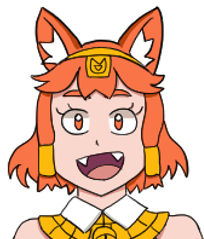
Senadora Merit
Representante política del País del Sol. Como diplomática clave, trabaja incansablemente para mantener los lazos de fraternidad y la alianza estratégica con el País Flor de Cerezo, velando por la paz entre ambas naciones.
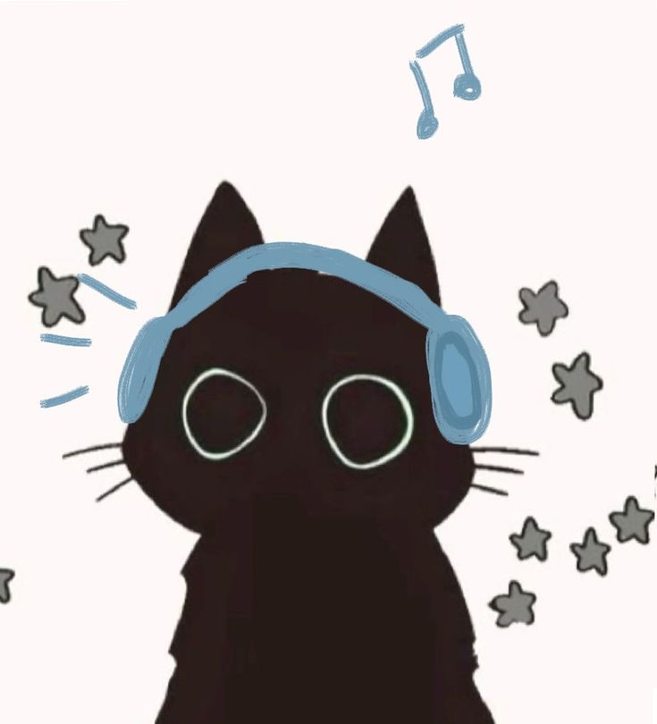
Sofi

Beryl
Una joven entusiasta con una pasión inagotable por el periodismo. Siempre armada con su cámara, busca capturar los últimos avances tecnológicos; fue precisamente en su labor informativa donde conoció a Masato.
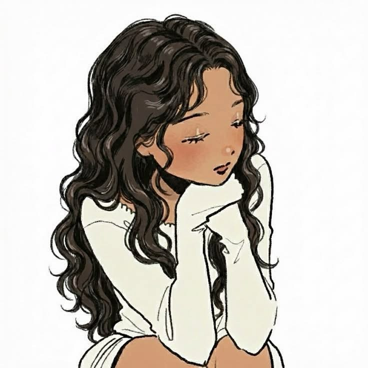
Cris

Caspian Roublast
Miembro destacado de la élite de la Alianza, forjado en las misiones más peligrosas. Mantiene una rivalidad competitiva pero leal con su mejor amigo, Satoshi, lo que lo impulsa a superar constantemente sus propios límites.

Jeff